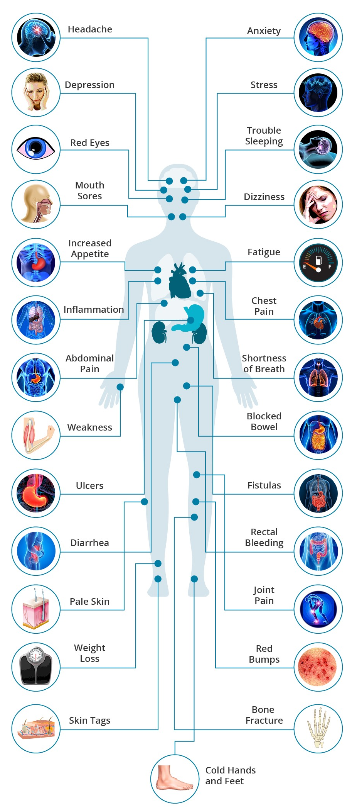
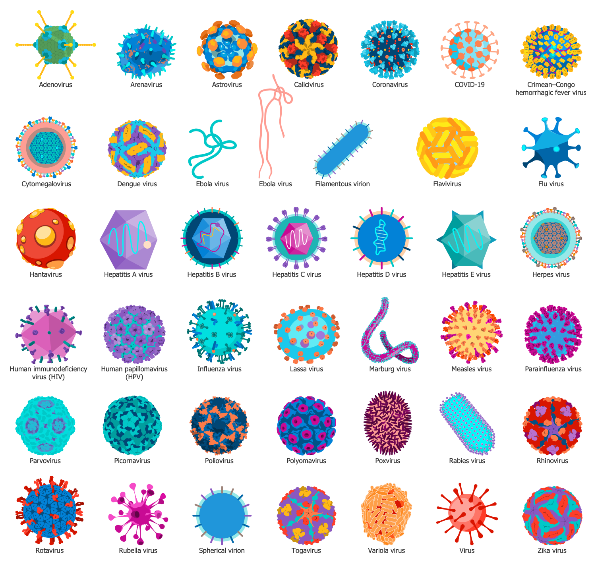
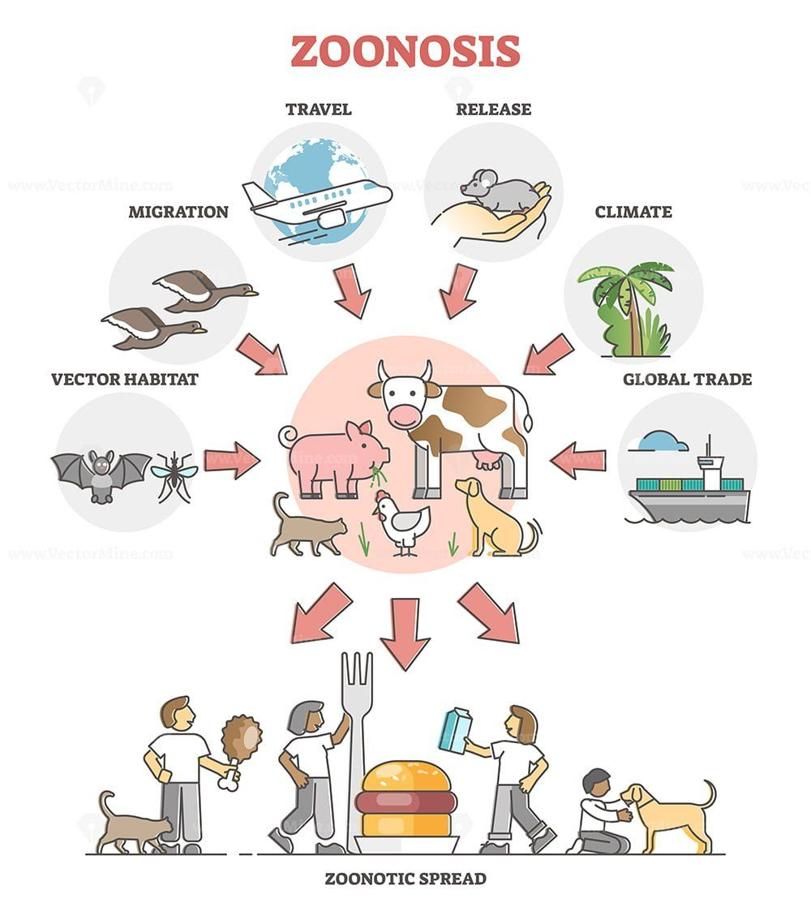
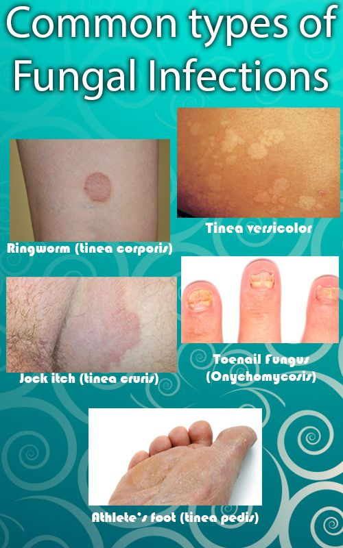
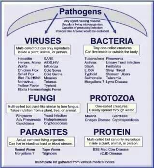
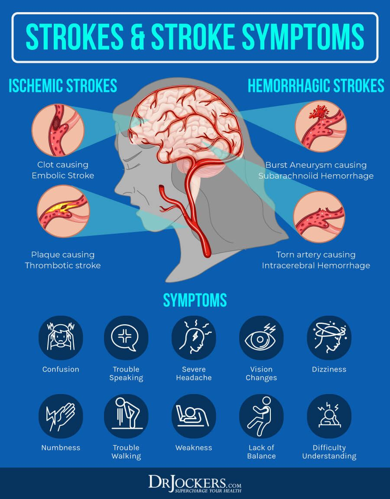

Infectious Diseases :
Infectious diseases are illnesses caused by harmful agents (pathogens)
that get into your body. The most common causes are viruses, bacteria, fungi and parasites. Infectious diseases usually spread from person to
person, through contaminated food or water and through bug bites. Some infectious diseases are minor and some are very serious.
What are infectious diseases?
Infectious diseases are illnesses caused by harmful organisms (pathogens) that
get into your body from the outside. Pathogens that cause infectious diseases are viruses, bacteria, fungi, parasites and,
rarely, prions. You can get infectious diseases from other people, bug bites and contaminated food, water or soil.
What are the types of infectious diseases?
Infectious diseases can be viral, bacterial, parasitic or fungal infections. There's
also a rare group of infectious diseases known as transmissible spongiform encephalopathies (TSEs).
- Viral infections : Viruses are a piece of information (DNA or RNA) inside of a protective shell (capsid).
Viruses are much smaller than your cells and have no way to reproduce on their own. They get inside your cells and use your cells'
machinery to make copies of themselves.
- Bacterial infections : Bacteria are single-celled organisms with their instructions written on a small piece of DNA.
Bacteria are all around us, including inside of our body and on our skin.
Many bacteria are harmless or even helpful, but certain bacteria release toxins that can make you sick.
- Fungal infections : Like bacteria, there are many different fungi. They live on and in your body. When your fungi get overgrown
or when harmful fungi get into your body through your mouth, your nose or a cut in your skin, you can get sick.
- Parasitic infections : Parasites use the bodies of other organisms to live and reproduce.
Parasites include worms (helminths) and some single-celled organisms (protozoa).
Common infectious diseases caused by viruses:
- Common cold.
- The flu (influenza).
- COVID-19.
- Stomach flu (gastroenteritis).
- Hepatitis.
- Respiratory syncytial virus (RSV).
Common infectious diseases caused by bacteria:
- Strep throat.
- Salmonella.
- Tuberculosis.
- Whooping cough (pertussis).
- E. coli.
- Clostridioides difficile (C. diff).
Common infectious diseases caused by fungi:
- Ringworm (like athlete's foot).
- Fungal nail infections.
- Thrush.
Common infectious diseases caused by parasites:
- Giardiasis.
- Toxoplasmosis.
- Hookworms.
- Pinworms.
What are the symptoms of infectious diseases?
Symptoms of infectious diseases depend on the type of illness.
Fungal infections usually cause localized symptoms, like rash and itching. Viral and bacterial infections can have symptoms
in many areas of your body, like :
- Fever.
- Chills.
- Congestion.
- Cough.
- Fatigu.
- Muscle aches and headache.
- Gastrointestinal symptoms (diarrhea, nausea, vomiting).
It's important to see a doctor if you have a.
How are infectious diseases treated?
Treatment depends
on what causes the infection. Sometimes your healthcare provider will recommend monitoring your symptoms rather than taking
medication.
- Bacterial infections can be treated with antibiotics. The right antibiotic depends on what bacteria causes the infection.
- You can manage most viral infections with over-the-counter medications for your symptoms until you feel better.
If you have the flu, your healthcare provider may prescribe oseltamivir phosphate (Tamiflu®) in some cases.
Certain viral infections have special medications to treat them.
- Fungal infections can be treated with antifungal medications. You can
take them orally, like fluconazole (Diflucan®) or put them on your skin just where the fungus is, like clotrimazole (Lotrimin®).
- Parasites can be treated with antiparasitic drugs, such as mebendazole (Emverm®).
-
There are no treatments for prion diseases.
Other ways to help prevent infectious disease
In addition to vaccines and
safe food handling habits, you can reduce your risk of coming down with or spreading an infectious disease with a few everyday practices.
- Wash your hands with soap and water. Thorough hand-washing is particularly important before preparing a meal or eating,
after using the bathroom, after contact with poop (animal or human) and after gardening or working with dirt.
- Cover your nose and mouth when you sneeze or cough.
- Disinfect frequently touched surfaces in your home and workplace.
- Avoid contact with people who are sick with an infectious disease or sharing personal items with them.
-
Avoid contact with others while you are sick with an infectious disease.
-
Don't drink from or swim in water that could be contaminated.
-
Wear a mask around others when you are sick or as recommended by the CDC.





